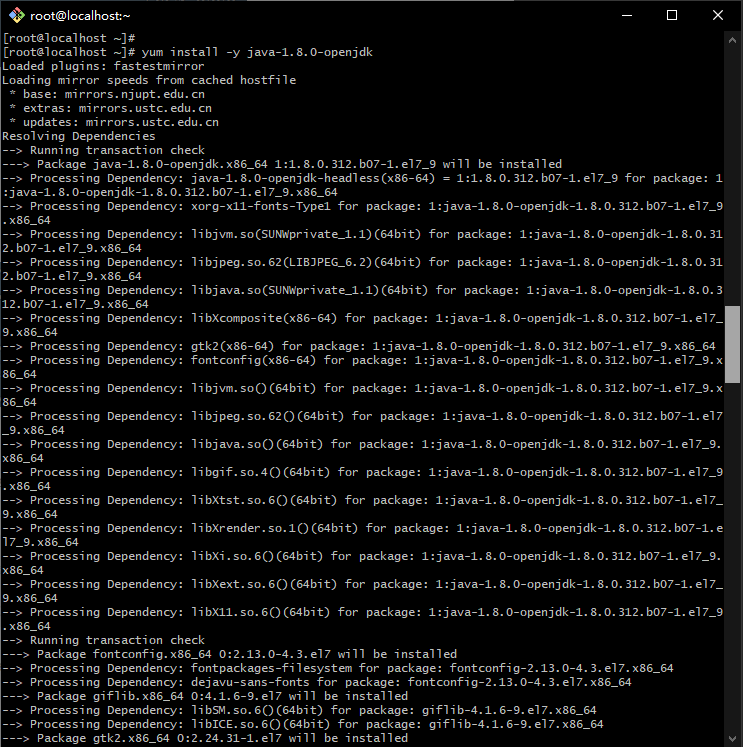
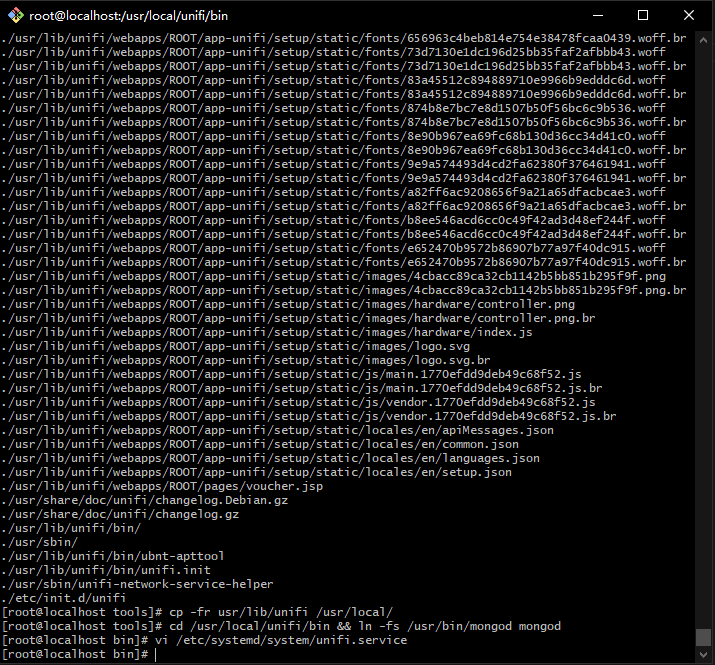
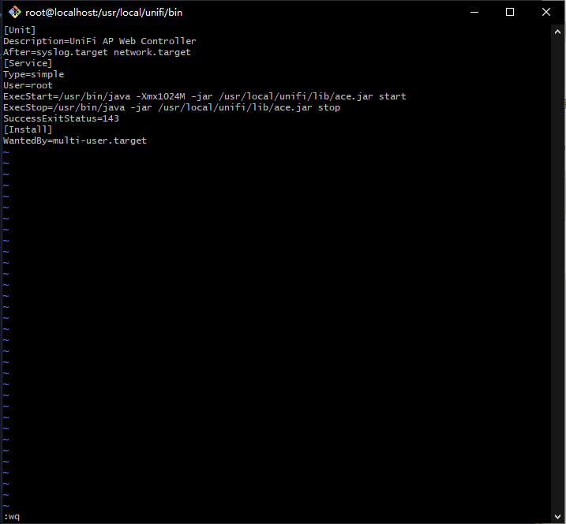
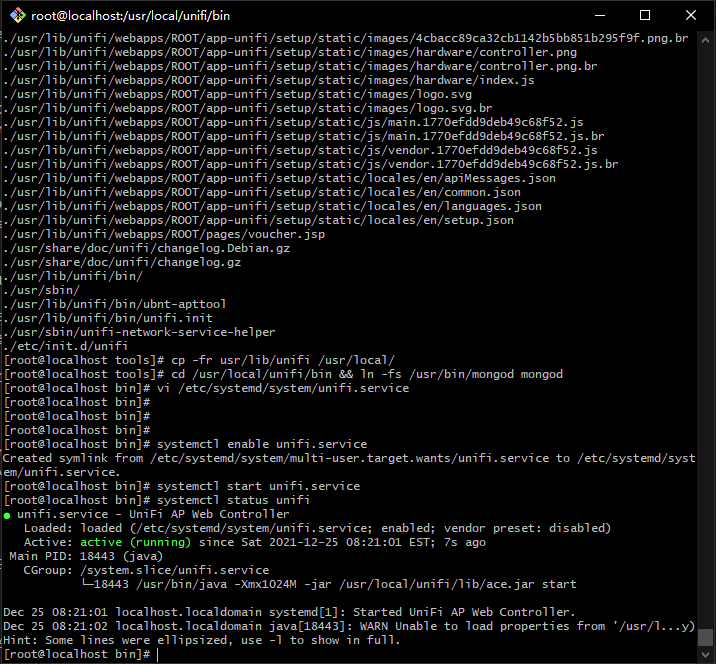

CentOS 7 安装 Unifi Controller 最新版本
1.1 用SSH工具以root管理员身份登录到服务器

1.2 更新yum软件源
yum upadte

1.3 关闭服务器防火墙
systemctl stop firewalld.service
systemctl disable firewalld.service

2.1 添加mongodb软件源
vi /etc/yum.repos.d/mongodb-org-4.4.repo
添加以下内容到mongodb-org.repo
[mongodb-org-4.4]
name=MongoDB Repository
baseurl=https://repo.mongodb.org/yum/redhat/$releasever/mongodb-org/4.4/x86_64/
gpgcheck=1
enabled=1
gpgkey=https://www.mongodb.org/static/pgp/server-4.4.asc
2.2 安装mongodb-4.4
yum install -y mongodb-org-4.4.1 mongodb-org-server-4.4.1


2.3 设置Mongodb开机启动,并立即运行mongodb服务,检测其状态
systemctl enable mongod.service #添加到开机启动
systemctl start mongod.service #启动mongod
systemctl status mongod #查看mongod运行状态

3.1 安装JAVA JDK环境
yum install -y java-1.8.0-openjdk


3.2 检测Java安装版本信息
java -version

4.1 安装UniFi Controller
准备工作：先安装好wget下载工具,xz解压工具
yum install xz wget

4.2下载unifi controller 6.5.55
到 https://www.ui.com/download/unifi/ 下载最新Linux版UniFi控制器 https://dl.ui.com/unifi/6.5.55/unifi_sysvinit_all.deb
wget https://dl.ui.com/unifi/6.5.55/unifi_sysvinit_all.deb --no-check-certificate

4.3解压文件并配置安装unifi controller服务
mkdir tools && mv unifi_sysvinit_all.deb tools && cd tools
ar -xv unifi_sysvinit_all.deb && tar -vxf data.tar.xz
cp -fr usr/lib/unifi /usr/local/
cd /usr/local/unifi/bin && ln -fs /usr/bin/mongod mongod #创建链接

4.4编辑unifi系统服务
vi /etc/systemd/system/unifi.service
添加以下内容到unifi.service
[Unit]
Description=UniFi AP Web Controller
After=syslog.target network.target
[Service]
Type=simple
User=root
ExecStart=/usr/bin/java -Xmx1024M -jar /usr/local/unifi/lib/ace.jar start
ExecStop=/usr/bin/java -jar /usr/local/unifi/lib/ace.jar stop
SuccessExitStatus=143
[Install]
WantedBy=multi-user.target
说明:-Xmx1024M是限制最大内存为1G(1024M)，如果服务器内存很大配置很好删除这项目配置即可 

4.5. 启动Unifi Controller服务
systemctl enable unifi.service #添加到开机启动
systemctl start unifi.service
systemctl status unifi

如果云服务器是阿里云或腾讯云提供的,请在管理平台添加防火墙规则，把3478,8080,8443,8843,8880添加到规则内放行端口即可。
4.6 访问Unifi Controller服务
在浏览器打开https://IP:8443